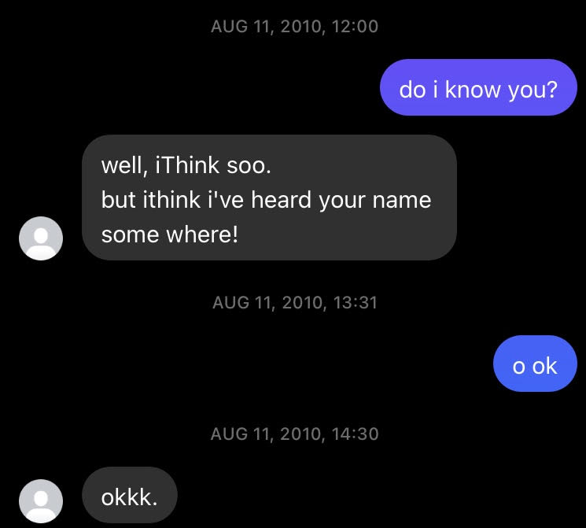

Some are ugly and fleeting, others aesthetic and timeless.
I've seen a lot of different writing styles in my life from Facebook chats to essays to texting to email.
While I used to be a stickler for perfect grammar, sentence structure, and punctuation (and I definitely still am to an extent), part of me now understands the aesthetic associated with the different styles and the ugliness and asininity associated with others.
i first came across the all-lowercase style in high school. it was making its way across the popular girls before trickling down into the remaining population. the main users were girls, but a couple of guys had their texts devoid of any of that disgusting uppercase garbage. i still see this now among peers who are my age.
and while i think the lack of uppercase letters looks nice and has a nice hue to it, i think there's an improved efficiency to it. lowercasers (as i'll call them) don't have to spend time worrying about proper capitalization. they just type!
the next obvious progression of lowercase is what ill deem lowercase+ or lack of necessary punctuation. for example the previous sentence didnt have an apostrophe on the i will contraction but any native english speaker will know what was meant. commas are mostly unnecessary unless a grandmothers life is at stake. periods are also optional but absolutely improve clarity and make sentences distinct from each other.
lwrcs+ is by far my preferred method of iming at work. i can use abbreviations and ppl will still understand me. its much faster to communicate than worrying about capitalizing or punctuating. words or phrases can be shorted to bc or u or idk or y or n or tmrw or afaik or iirc or ty or gn or tn or lmk. ppl have to know these but generally do. skipping all vowels and or shortening all words is unnecessary.
and for iming or texting punctuation is mostly irrelevant
bc you can just send im after im
its free and instant and generally isnt annoying
its also less formal and more like real life at least to me
I Knew Some People Who Would Take The Time To Capitalize The First Letter Of Every Single Word In Their Sentence. I Don't Know Of A Phone Setting That Allows For This, Meaning They Would Have To Manually Make Sure That Every Word Was Capitalized. Writing This On My Computer Feels Blasphemous And Wrong: My Hands Are Trying To Write A Title, But My Brain Is Forcing These Unnatural Capitalizations On My Hands. Who Would Do This To Themselves?!
Maybe People That Do This Don't Know What Words To Capitalize And Hide Under The Catch-All Guise Of "Cool Writing". If You Capitalize Every Word, You'll Never Miss One!
Perfect writing (as defined by whatever format is being followed) should be reserved for more formal writing. There's something to be said about the typography of an essay/story/post being superb, or as Gwern puts it:
And the most tastefully-designed page, with true smallcaps and correct use of em-dashes vs en-dashes vs hyphens vs minuses and all ...
iWentt to a slightlyy ghetto middle school but everyonee still had Facebook. Some peoplee literallyy typed like this: purposefully putting extra letters on the ends of words and combining the "I" with the following verb: iWrote, iRan, etc. Was this inspired by Apple or some other strange influence? Who knows. The people who wrote like this are long past that phase, but their Facebook messages still exist deep within my messages:
Gamertags, or Xbox usernames for the uninitiated, also had their heydey of "cool" styles. This GameSpot thread offers some nostalgia:
iTz *Insert name* People with two lowercase I's (i.e. legiit) CaSe SeNsItIve I's before Uppercase letters (i.e. IL O S IE IR) MLG *Insert name* Z's instead of S's
XxnoobnamexX
I [name] l [on certain games the difference between an uppercase "eye" and lowercase "ell" was very minute]
The gamertag rage nowadays is on OG gamertags, or gamertags that have a single word or name: Kyle, Apollo, etc.
For full disclosure, my gamertags over the years have been: